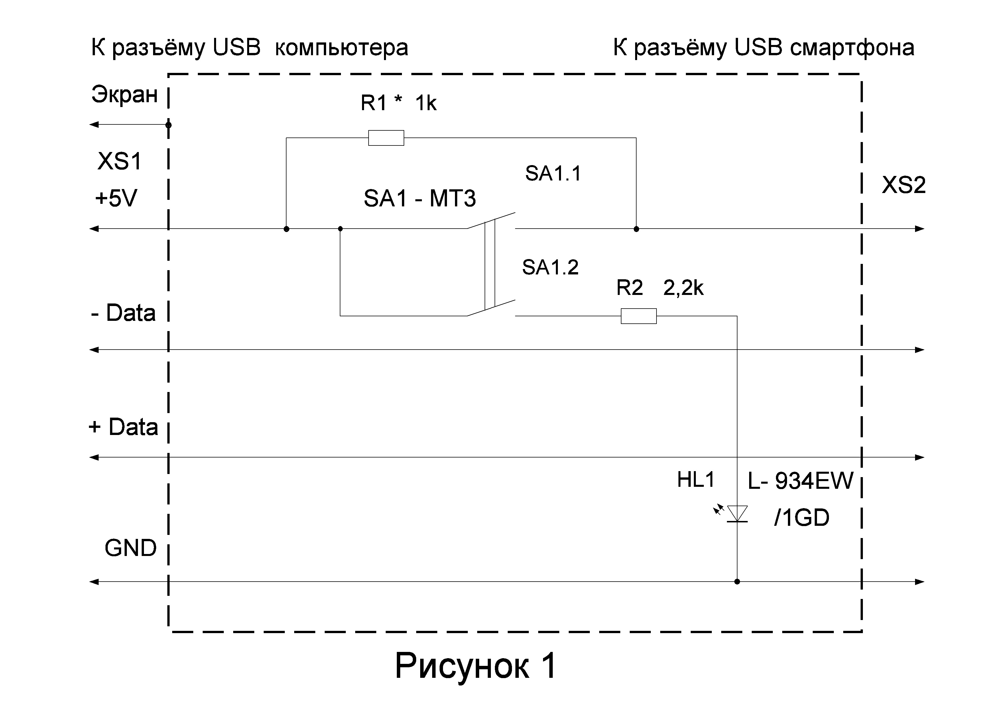

При использовании смартфона в качестве модема для компьютера обмен данными между устройствами чаще всего происходит через Wi-Fi или через USB соединение. В случае подключения телефона к компьютеру через USB производиться зарядка его аккумулятора обычно ещё не разрядившегося до минимального уровня, что приводит к наиболее быстрому его износу при частом подключении. Устранить этот недостаток можно собрав специальный переключатель, с помощью которого можно производить отключение зарядки аккумулятора смартфона во время его подключения к компьютеру по USB кабелю, не нарушая процесса обмена данными между устройствами.
На рисунке 1 изображена схема переключателя. Для включения зарядки аккумулятора смартфона необходимо включить сдвоенный выключатель SA1 подав напряжение +5В на USB вход телефона, одновременно включается светодиод HL1, который обеспечивает индикацию зарядки аккумулятора. Резистор R2 ограничивает ток через светодиод HL1. При размыкании выключателя ток в цепи +5В протекает через шунтирующий контакты SA1.1 резистор R1, который значительно уменьшает величину тока, обмен данными между компьютером и телефоном в это время не прерывается. При этом светодиод HL1 тоже выключен.
Настройка устройства заключается в подборе резистора R1, поскольку минимальный уровень тока при котором возможна стабильная передача данных у каждой модели смартфонов отличается. Подбором резистора R1 необходимо добиться его минимального значения, при котором происходит стабильное соединение без прерываний. Чтобы переделать данное устройство для согласования с разными моделями телефонов необходимо будет заменить резистор R1 на переменный номиналом 2,2к, с последовательно подключенным ограничительным резистором 300 Ом для защиты от выгорания переменного резистора. И производить с помощь этого резистора подстройку под используемую модель смартфона.
Провода питания +5В и GND для монтажа нежелательно делать слишком тонкими, чтобы не возникало проблем во время режима зарядки телефона.
Места соединения и детали необходимо экранировать, для чего можно использовать обычную оберточную фольгу предварительно изолировав все детали и места пайки. Фольгу с помощью провода необходимо соединить с экраном USB порта (это пятый контакт металлическое основание разъема), но это не общий провод GND.
Данный переключатель можно изготовить в виде отдельного переходника с USB разъёмами двух типов Male XS1, Female XS2 или установить в разрез готового USB кабеля зарядки телефона и использовать любой пластиковый корпус. Выключатель можно заменить на аналогичный и более удобный.
Перед первым подключением необходимо хорошо проверит собранное устройство на правильность монтажа соединений соответствующих контактов USB datasheet и отсутствие коротких замыканий между контактами, чтобы не испортить подключаемые устройства.
Автор: Александр Кузнецов